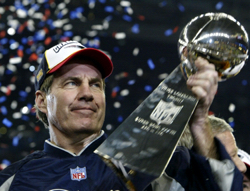

Bill Belichick was born in 1952 and grew up in a football family with his father being an assistant coach for the United States Naval Academy. He started his coaching career as an assistant for the Baltimore Colts in 1975. He then went on to work for multiple teams between 1975 and 1999 coaching various positions from wide receivers to defensive coordinator. In 2000, he became the head coach of the New England Patriots where the dynasty started. He is widely regarded as one of, if not the, best coach in NFL history.
Bill Belichick coached the New England Patriots from 2000 until 2023 where he led the team to one of the best football dynasty in the history of the sport. In his first year with the team, they did not have a winning season and missed the playoffs. In 2001 he led the team to a Super Bowl win, which started the dynasty off. He then led the team to 9 super bowl appearances, winning 6 of them. He also led the team to the most playoff wins with 30, and the most divisional championships with 17. These accomplishments and many more are why he is regarded as one of the best head coaches in NFl history.
| Year | Super Bowl Wins |
|---|---|
| 2000-2006 | 3 Wins |
| 2005-2014 | 1 Win |
| 2015-2023 | 2 Wins |